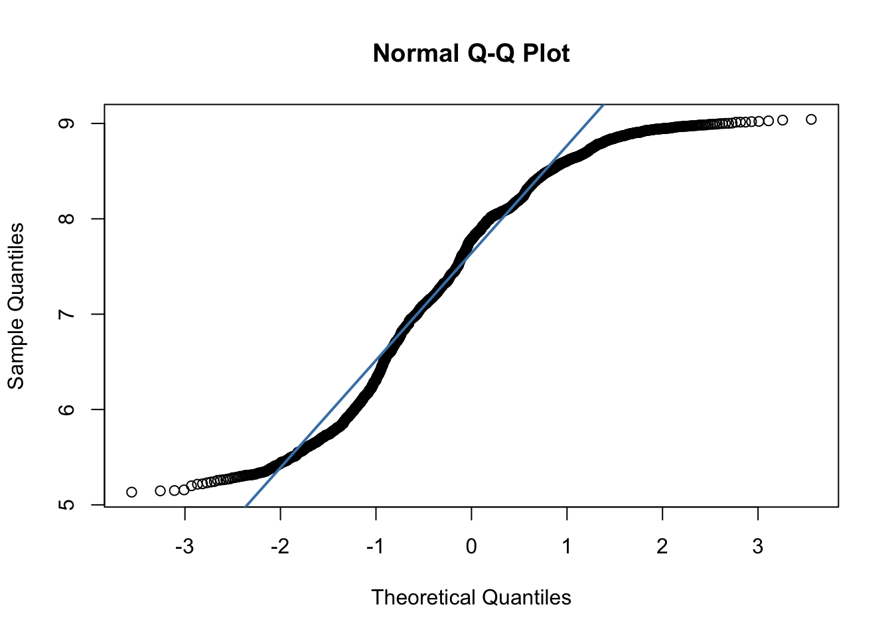

library(tidyverse)
library(tmap)
library(sf)
summer_temp <- st_read("https://drive.google.com/uc?export=download&id=1byhsYTBnqegfPGsZWtAHH4pZgGbSTr_s")
acs <- st_read("https://drive.google.com/uc?export=download&id=1ffMbuX4ZQ8vuZK9uwFOBe61bEbKfKg1j") |> mutate(rural = ifelse(rural == 1, "rural", "non-rural"), low_inc = ifelse(low_inc == 1, "low-income", "high-income"), high_commute = ifelse(high_commute == 1, "high commute", "low commute"))
pm <- st_read("https://drive.google.com/uc?export=download&id=1zf1xk-7pOoSnEwGvGsNVa6XejFoPFzdJ")12 Hypothesis Testing
We will use the following spatial datasets:
- A sample of mean summer temperature values across North Carolina from 2000-2010 and 2010-2020 TerraClimate.
- 2023 census tract data from the American Community Survey
- Census tract mean PM2.5 from 2016-2020 from the CDC
- Mobility data during 2020 for North Carolina counties from the Google Covid Mobility Report
To follow along with this tutorial, make a new .Rmd document. As you move through the tutorial add chunks, headers, and relevant text to your document.
12.1 One Sample T-Test
A one-sample t-test is a statistical test used to determine whether the mean of a single sample is significantly different from a known or hypothesized value. It assumes that the data is continuous, that the observations are independent, and that the values are normally distributed in the population.
To demonstrate a one sample t-test, we can compare the mean daily PM2.5 value for census tracts across North Carolina to a known value. Although each tract in North Carolina has a mean value (i.e. the census tracts are not sampled), we can consider this a “natural sample”.
In geography, inferential statistics are sometimes applied even when datasets include all observed units, because many spatial phenomena contain both systematic and random components. These datasets can be treated as “natural samples”, where the observed variation reflects real-world randomness. For example, mean daily PM2.5 values across all census tracts in a state are influenced by systematic factors like industrial activity and traffic patterns, but also by unpredictable environmental processes such as local weather conditions. This natural variability allows the observed values to be treated as a sample from the broader population of possible PM2.5 conditions, making inferential tests like the one-sample t-test appropriate.
The annual average PM2.5 value for the eastern United States is 7.8µg/m3 . Therefore, we could use a one-sample t-test to see if the North Carolina average differs from the United States average.
Before we run a statistical test, the first thing we have to do is check our assumptions. We know that PM2.5 is a continuous variable. Because this data is spatial, it likely violates the assumption of independence (but we will put a pin in that for now and assume independence) We can estimate the distribution of the population by using the distribution of the sample. A QQ-Plot indicates that the data distribution is non-normal.
qqnorm(pm$meanpm_2016_2020)
qqline(pm$meanpm_2016_2020, col = "steelblue", lwd = 2)
At this point, we have two options for testing whether our sample mean differs from a hypothesized value. The first option is to use a non-parametric test, which does not assume any particular distribution for the population. A non-parametric alternative for a one-sample t-test is the Wilcoxon Signed-Rank Test. The second option is to still use the one-sample t-test. While this test assumes that the population is normally distributed, the Central Limit Theorem tells us that, for large sample sizes, the sampling distribution of the mean is approximately normal regardless of the population distribution. Since our sample is large (n = 2672), the t-test is valid in this case, even if the data are not normal.
Since this class focuses on parametric tests, we will continue on with our t-test. The mean of our dataset is
mean(pm$meanpm_2016_2020)[1] 7.546838Q1: Formulate a null hypothesis that would use a one sample, one-sided t-test
We can then test our hypothesis
#test mean
t.test(pm$meanpm_2016_2020, mu = 7.8, alternative = "less", conf.level = 0.95)
One Sample t-test
data: pm$meanpm_2016_2020
t = -12.94, df = 2671, p-value < 2.2e-16
alternative hypothesis: true mean is less than 7.8
95 percent confidence interval:
-Inf 7.579029
sample estimates:
mean of x
7.546838 In this case, the low p-value of our t.test allows us to reject the null hypothesis in favor of the alternative hypothesis:
H1: The mean PM2.5 value for North Carolina is less than the mean value for the eastern US.
12.2 Two Sample T-Test
A two-sample t-test compares the means of two different samples. For instance, we could compare the mean PM2.5 in urban vs. rural census tracts.
The assumptions for the two sample t-test are the same as the one-sample t-test with one addition: equal variance (also called homoscedasticity). This means that the two groups being compared should have similar variability in their values. If the variances are very different, the standard two-sample t-test may not be appropriate. For the purposes of this analysis, we will assume that the variances of PM2.5 values in urban and rural census tracts are equal. This assumption allows us to use the standard two-sample t-test. However, if the variances were substantially different, we would need to use a version of the test that does not assume equal variance (Welch’s t-test).
Q2. Formulate a null hypothesis that would use a two sample two-sided t-test.
#convert data to factor
pm$rural <- factor(pm$rural, levels = c(0, 1), labels = c("urban", "rural"))
# Then run a standard two-sample t-test
t.test(meanpm_2016_2020 ~ rural, data = pm, var.equal = TRUE)
Two Sample t-test
data: meanpm_2016_2020 by rural
t = 20.389, df = 2670, p-value < 2.2e-16
alternative hypothesis: true difference in means between group urban and group rural is not equal to 0
95 percent confidence interval:
0.7590222 0.9205533
sample estimates:
mean in group urban mean in group rural
7.770299 6.930511 Based on our t-test results, we can reject the null hypothesis in favor of the alternative hypothesis:
H1: The mean PM2.5 in urban and rural census tracts is different.
12.3 Paired T-Test
A paired t-test evaluates whether the average change between two paired observations is significantly different from zero. It is typically used when the same individuals or locations are measured at two time points or under two conditions. For instance, we could consider our summer temperature values. In this dataset, we have a sample of 480 locations and two different values– mean summer temperature from 2000-2010 and mean summer temperature from 2010-2020.
We can consider this dataset a true simple random sample.
Q3: Formulate a null hypothesis that would use a one-sample paired t-test
t.test(summer_temp$av_summer_2010_2020, summer_temp$av_summer_2000_2010, paired = TRUE, alternative = "greater", conf.level = 0.95)
Paired t-test
data: summer_temp$av_summer_2010_2020 and summer_temp$av_summer_2000_2010
t = 192.75, df = 479, p-value < 2.2e-16
alternative hypothesis: true mean difference is greater than 0
95 percent confidence interval:
1.139164 Inf
sample estimates:
mean difference
1.148988 Based on our t-test results, we can reject the null hypothesis in favor of the alternative hypothesis:
H1: The mean summer temperature in 2010-2020 is higher than the mean summer temperature in 2000-2010.
12.4 Chi Square Test of Independence
The Chi-square test of independence is a statistical test used to determine whether two categorical variables are associated with one another. Because the variables are categorical rather than continuous, the test is non-parametric, meaning it does not assume any particular underlying distribution. Our American Community Data includes three categorical variables:
- Rural/ Non-rural
- Low income/ High Income
- Low commute / High commute
We could examine whether any pair of these variables is related. For instance, whether rural/non-rural and low commute/ high commute is related. In this case, the null hypothesis would be:
H0: Rural/non-rural status and commute category are independent (there is no association between them).
We can start by looking at a contingency table.
table(acs$rural, acs$high_commute)
high commute low commute
non-rural 310 1620
rural 118 580chisq.test(table(acs$rural, acs$high_commute))
Pearson's Chi-squared test with Yates' continuity correction
data: table(acs$rural, acs$high_commute)
X-squared = 0.20909, df = 1, p-value = 0.6475In this case, our X-squared value is low (.209) and the p-value is high (.65), meaning that we fail to reject the null hypothesis.
Q4: Run a chi square test of independence for another set of variables
12.5 Mini Challenge
This challenge will ask you to run hypothesis tests on mobility data for North Carolina counties during Covid-19. We will consider the county values as a natural sample for North Carolina. The mobility dataset includes the following variables:
rural- rural/nonrural flag for each countyworkplace_change- percent change in workplace mobility from March-May 2020workplace_change_may_dec- percent change in workplace mobility by county from May 2020- Dec 2020
- Create two maps– one for each mobility variable. Do you notice any spatial patterns?
- Calculate the mean workplace mobility for the state of NC during the two time periods. Develop a null hypothesis and run a paired t-test between the two time periods
- Calculate the mean workplace mobility for rural counties and urban counties. Develop a null hypothesis and run an independent samples t-test between the two geographical regions.
- Consider that the known average mobility during the March-May period across the US was -32. Develop a null hypothesis and run a one sample t-test between the known value and the sample value.